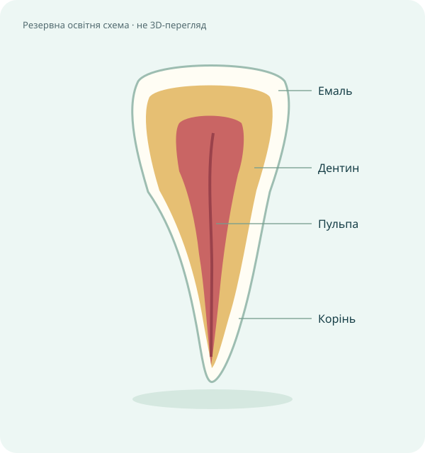

ІНТЕРАКТИВНЕ ДОСЛІДЖЕННЯ
3D-анатомія зуба
Розгляньте зуб з усіх боків. Оберіть позначку, щоб дізнатися про його будову.

Завантажуємо 3D-модель…
3D-перегляд недоступний. Показано резервну схему. Пояснення нижче залишаються доступними.
Мишка або один палець — обертання; колесо миші, два пальці чи кнопки + і − — масштаб. Коли модель у фокусі, стрілки обертають її, + і − змінюють масштаб, Home повертає початковий вигляд. Кнопка «Анатомічний розріз» перемикає між цілим зубом і розрізом.
Про освітню модель
Навчальна ілюстрація верхнього центрального різця зі спрощеними кольорами й пропорціями. Модель не пройшла клінічної перевірки й не призначена для діагностики. Ясна та кістка не показані.